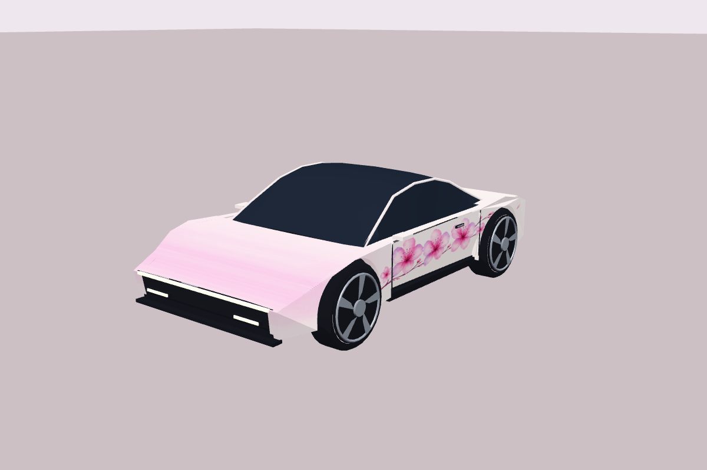
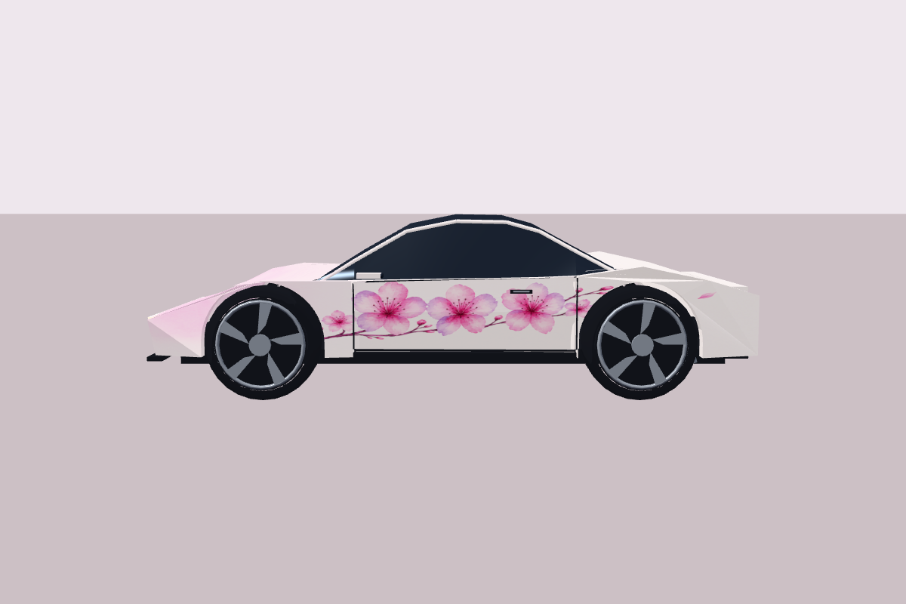
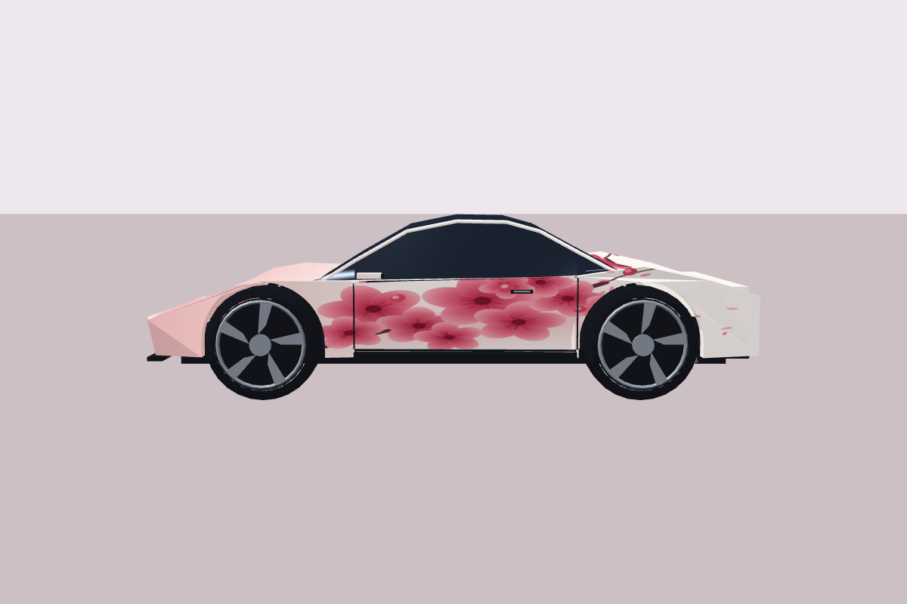
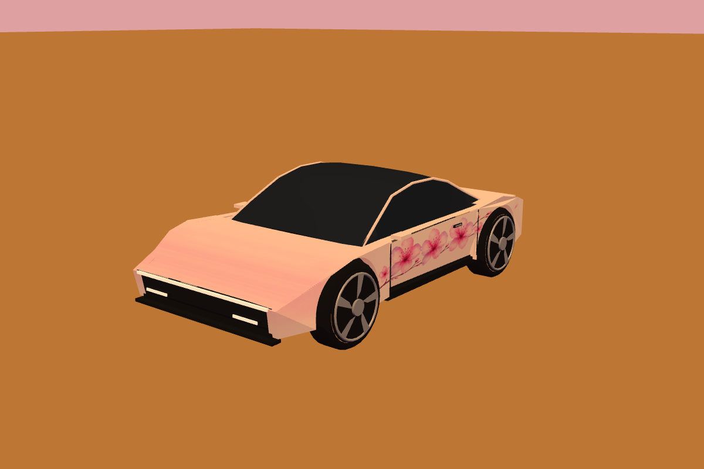
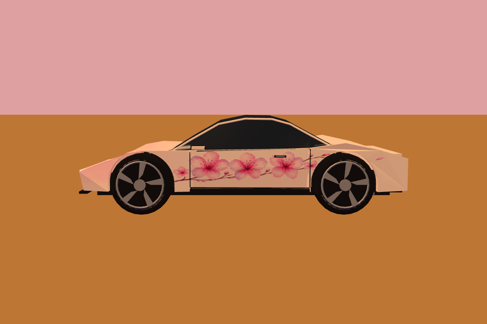
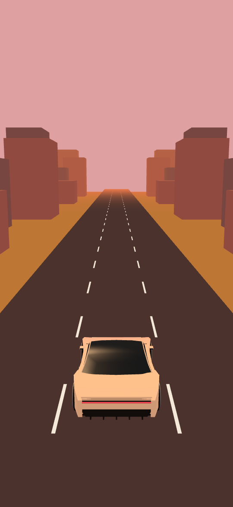

Pearl white, a pink-lilac nose and three generous blooms across the doors.

Actual project geometry and existing UV projection.
Flowers are elongated and lowered here so they fit the door on the model.

Fine plum branches, deep pink centres and soft lilac petal edges.

The current procedural canvas, rendered under the same studio lights.
Layered pigment, finer twigs and UV-adjusted petal proportions.

The game’s orange sun warms the pearl base; lilac edges keep the flowers pink.


The tail stays mostly white. Flowers read when the side comes into view.